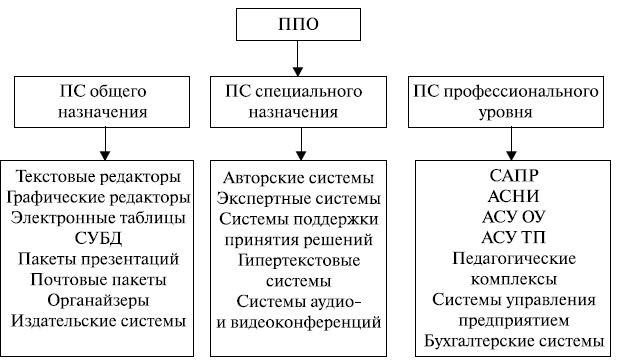

Прикладные программы предназначены для того, чтобы обеспечить применение вычислительной техники в различных сферах деятельности человека. Помимо создания новых программных продуктов, разработчики прикладных программ большие усилия тратят на совершенствование и модернизацию популярных систем, создание их новых версий. Новые версии, как правило, поддерживают старые, сохраняя преемственность, и включают в себя базовый минимум (стандарт) возможностей.
К прикладному программному обеспечению относятся программы, написанные для пользователей или самими пользователями, для задания компьютеру конкретной работы. Программы обработки заказов или создания списков рассылки – примеры прикладного программного обеспечения.
Прикладное ПО, обеспечивающее выполнение необходимых работ на ПК: редактирование текстовых документов, создание рисунков или картинок, обработка информационных массивов и т.д.
К прикладному ПО, например, относятся:
1. Комплект офисных приложений MS OFFICE.
2. Бухгалтерские системы.
3. Редакторы HTML или Web – редакторы.
4. Браузеры – средства просмотра Web - страниц.
5. Графические редакторы.
Один из возможных вариантов классификации программных средств (ПС), составляющих прикладное программное обеспечение (ППО), отражен на рис.2.4 .

Рис. 2.4.Структура прикладного программного обеспечения
Несмотря на широкие возможности использования компьютеров для обработки самой разной информации, самыми популярными являются программы, предназначенные для работы с текстами – текстовые редакторы и издательские системы.
Текстовыми редакторами называют программы для ввода, обработки, хранения и печатания текстовой информации в удобном для пользователя виде. Эксперты оценивают использование компьютера в качестве печатающей машинки в 80% всего времени задействования техники.
Большую популярность приобрели программы обработки графической информации . Компьютерная графика в настоящее время является одной из самых динамично развивающихся областей программного обеспечения. Она включает в себя ввод, обработку и вывод графической информации – чертежей, рисунков, фотографий, картин, текстов и т. д. – средствами компьютерной техники. Различные типы графических систем позволяют быстро строить изображения, вводить иллюстрации с помощью сканера или видеокамеры, создавать анимационные ролики. Графические редакторы позволяют пользоваться различным инструментарием художника, стандартными библиотеками изображений, наборами стандартных шрифтов, редактированием изображений, копированием и перемещением фрагментов по страницам экрана и др.
Для выполнения расчетов и дальнейшей обработки числовой информации существуют специальные программы – электронные таблицы. В процессе деятельности любого специалиста часто требуется представить результаты работы в виде таблиц, где одна часть полей занята исходными данными, а другая – результатами вычислений и графического анализа. Характерными для них является большой объем перерабатываемой информации, необходимость многократных расчетов при изменении исходных данных. Автоматизацией подобной рутинной работы и занимаются электронные таблицы.
Одним из наиболее перспективных направлений развития вычислительной техники является создание специальных аппаратных средств для хранения гигантских массивов информационных данных и последующей нечисловой обработки их, чаще всего – поиска и сортировки. Для компьютерной обработки подобных баз данных используют системы управления базами данных (СУБД). Последние представляют собой набор средств программного обеспечения, необходимых для создания, обработки и вывода записей баз данных.
К прикладному программному обеспечению относятся также инструментальные программные средства специального назначения . В настоящее время создаются различные специальные программные системы целевого назначения, предназначенные для работы специалистов в некоторой предметной области. Такие программы называют авторскими инструментальными системами. Авторская система представляет интегрированную среду с заданной интерфейсной оболочкой, которую пользователь может наполнить информационным содержанием своей предметной области.
Среди таких систем получили распространение экспертные системы . Такие программы ведут себя подобно эксперту в некоторой узкой прикладной области. Экспертные системы призваны решать задачи с неопределенностью и неполными исходными данными, требующие для своего решения экспертных знаний. Кроме того, эти системы должны уметь объяснять свое поведение и свое решение. Экспертные системы, являющиеся основой искусственного интеллекта, получили широкое распространение в различных областях науки (например, для классификации животных и растений по видам, для химического анализа), в медицине (постановка диагноза, анализ электрокардиограмм, определение методов лечения), в технике ( поиск неисправностей в технических устройствах, слежение за полетом космических кораблей и спутников), в политологии и социологии, криминалистике, лингвистике и т.д.
В последнее время широкую популярность получили программы обработки гипертекстовой информации . Гипертекст – это форма организации текстового материала не в линейной последовательности, а в форме указания возможных переходов (ссылок), связей между отдельными его фрагментами. В обычном тексте используется обычный линейный принцип размещения информации, и доступ к нему (тексту) осуществляется последовательно. В гипертекстовых системах информация напоминает текст энциклопедии, и доступ к любому выделенному фрагменту текста осуществляется произвольно по ссылке. Организация информации в гипертекстовой форме используется при создании справочных пособий, словарей, контекстной помощи (Help) в прикладных программах.
Отдельную группу прикладного ПО составляют программные средства профессионального уровня. Каждая прикладная программа этой группы ориентируются на достаточно узкую предметную область, но проникает в нее максимально глубоко. Так функционируют АСНИ – автоматизированные системы научных исследований, каждая из которых "привязана" к определенной области науки, САПР – системы автоматизированного проектирования, каждая из которых также работает в узкой области, АСУ – автоматизированные системы управления (которых в 60-70-х годах были разработаны тысячи).
Инструментальное ПО или системы программирования — это системы для автоматизации разработки новых программ на языке программирования.